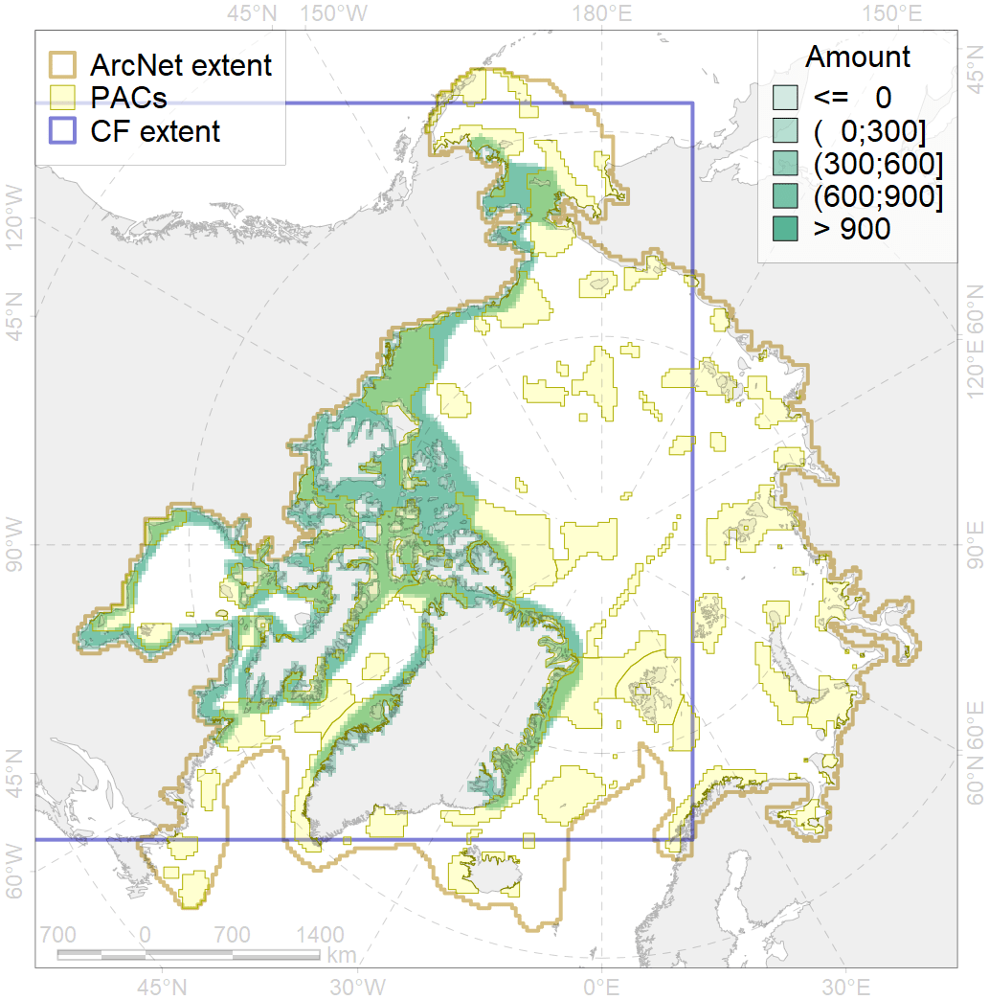
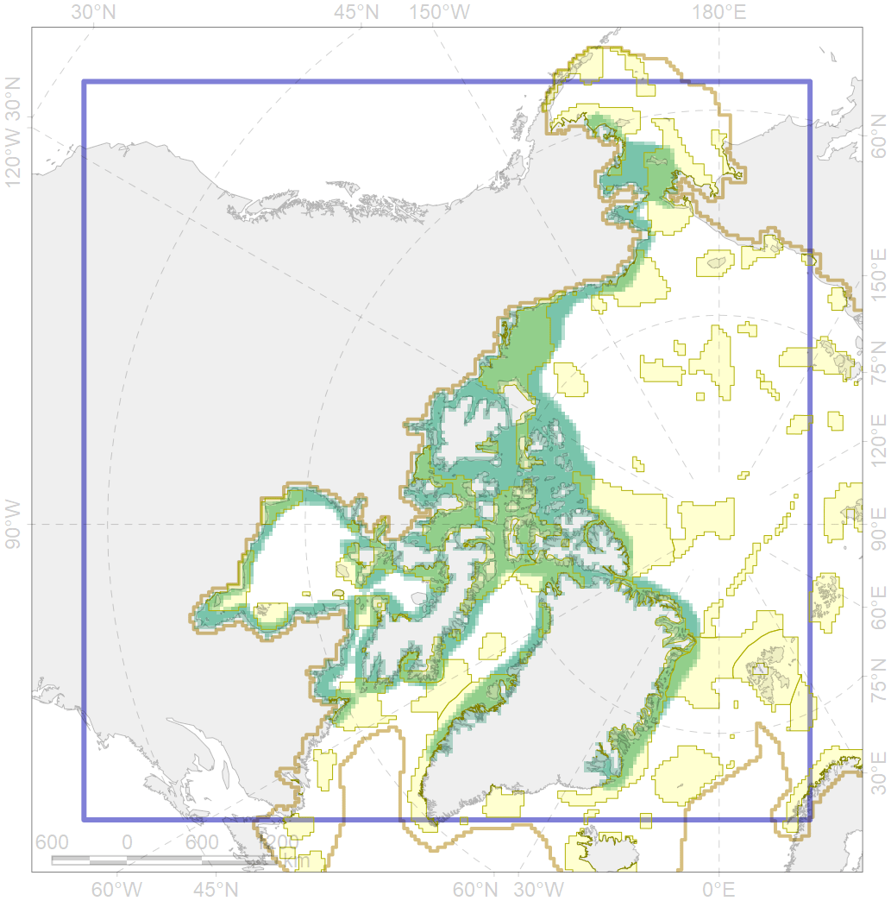

4053

| CF ID | 4053 |
| CF Name | Range of the Fourhorn Sculpin (Myoxocephalus quadricornis), Euro-Asian populations |
| Time Period | 1950-2010s |
| Source(s) | Pethon, 2005;Reshetnikov, 2013; Mecklenburg et al., 2018 |
| Seasonality | January-December |
| Depth Horizon | 0-55 |
| Methodology | Compiled from literature sources based on field observations |
| Author Name | N. Chernova |
| Notes | |
| Conservation Target Set in the Scenario | 0.03 |
| Conservation Target Achieved in the Scenario | 0.504 (Scenario: 1678.5%) |
| PAC ID | Proportion in the PAC | Contribution to ArcNet Target Achievement | PAC’s Contribution to the Achieved Target |
|---|---|---|---|
| 3 | 1.3% | 37.4% | 2.2% |
| 5 | 3.0% | 94.9% | 5.7% |
| 6 | 0.0% | 1.5% | 0.1% |
| 29 | 1.6% | 54.0% | 3.2% |
| 32 | 4.1% | 134.6% | 8.0% |
| 33 | 1.6% | 53.5% | 3.2% |
| 44 | 2.9% | 91.3% | 5.4% |
| 45 | 0.1% | 3.1% | 0.2% |
| 46 | 1.2% | 35.1% | 2.1% |
| 48 | 0.2% | 4.8% | 0.3% |
| 49 | 0.5% | 14.0% | 0.8% |
| 50 | 0.1% | 3.8% | 0.2% |
| 51 | 2.3% | 71.3% | 4.2% |
| 52 | 6.4% | 204.1% | 12.2% |
| 53 | 0.0% | 0.9% | 0.1% |
| 54 | 2.6% | 85.4% | 5.1% |
| 60 | 1.2% | 32.0% | 1.9% |
| 61 | 0.0% | 1.1% | 0.1% |
| 62 | 8.2% | 249.6% | 14.9% |
| 63 | 0.8% | 19.1% | 1.1% |
| 64 | 0.2% | 5.3% | 0.3% |
| 65 | 4.5% | 129.0% | 7.7% |
| 66 | 1.2% | 36.0% | 2.1% |
| 67 | 1.5% | 43.6% | 2.6% |
| 68 | 0.2% | 4.4% | 0.3% |
| 69 | 1.1% | 33.4% | 2.0% |
| 70 | 1.2% | 31.9% | 1.9% |
| 71 | 0.4% | 10.2% | 0.6% |
| 73 | 0.7% | 22.6% | 1.3% |
| 74 | 0.1% | 2.0% | 0.1% |
| 75 | 0.0% | 0.3% | 0.0% |
| 76 | 1.6% | 45.1% | 2.7% |
| inner | 50.9% | 1555.0% | 92.6% |
| outer | 48.8% | 123.6% | 7.4% |